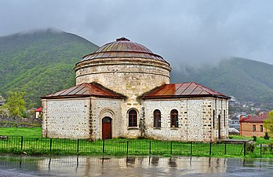

Şəki

Şəki — Azərbaycan Respublikasında şəhər, Şəki rayonunun inzibati mərkəzi. 4 yanvar 1963-cü ildən respublika tabeli şəhərdir.
1846-cı ildən 1968-ci ilə qədər "Nuxa" adlandırılmışdır. Şəki rayonunun inzibati mərkəzidir. Sovet dövründə respublika tebeliyində olan şəhər statusuna malik idi. Hal-hazırda da Şəki rayonu tərkibində deyil, birbaşa respublika tabeliyindədir. Amma Şəki şəhər icra hakimiyyəti başçısının səlahiyyətləri həm də Şəki rayonuna şamildir.
Şəki şəhəri
Şəki şəhəri respublikanın şimal-qərbində, Kiş çayının sol sahilində, dəniz səviyyəsindən 700 metr yüksəklikdə, paytaxt Bakı şəhərindən 370 km aralıda, Böyük Qafqaz sıra dağlarının cənub ətəklərində, mərkəzi regionlardan uzaqda – təcrid olunmuş bir məkanda yerləşir. Şəhəri əhatə edən təbiət, meşələrlə örtülmüş dağlar öz gözəlliyi ilə insanı valeh edir. Xan yaylağının sıldırım yollarıyla şimal tərəfdən şəhərə yaxınlaşacaq olursaq qarşımıza nəticəsində iki yarğanın əmələ gəldiyi iki böyük uçuruma — Çaqqaldar və Ottal uçurumlarına rast gələrik. Şəki şəhərinin qəribə quruluşu vardır. Şərqdən Qərbə axan Qurcanaçay çayı şəhəri iki hissəyə, daha yüksəkdə yerləşən Cənub, digəri isə vadidə yerləşən Şimal hissələrinə bölür.
design by elshen